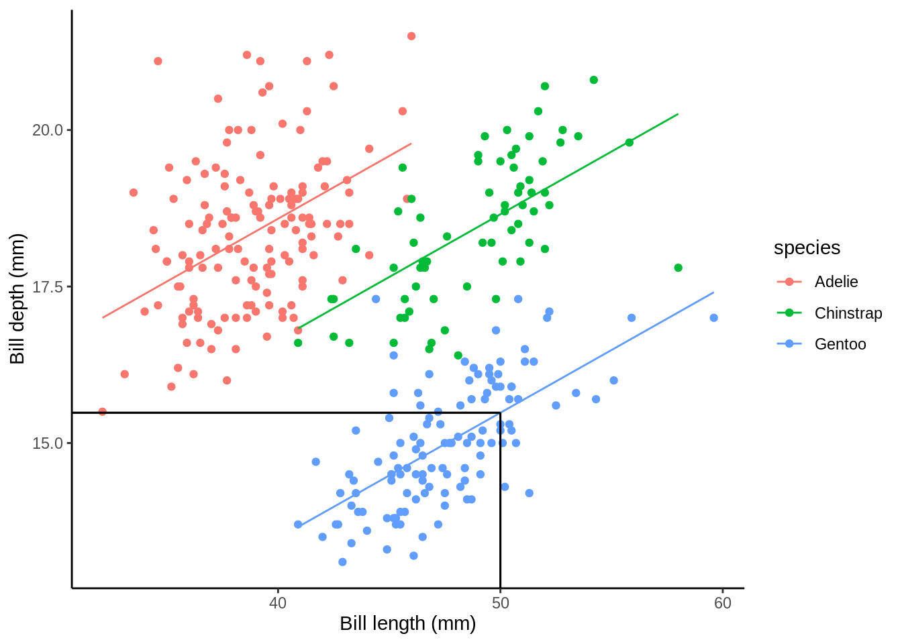
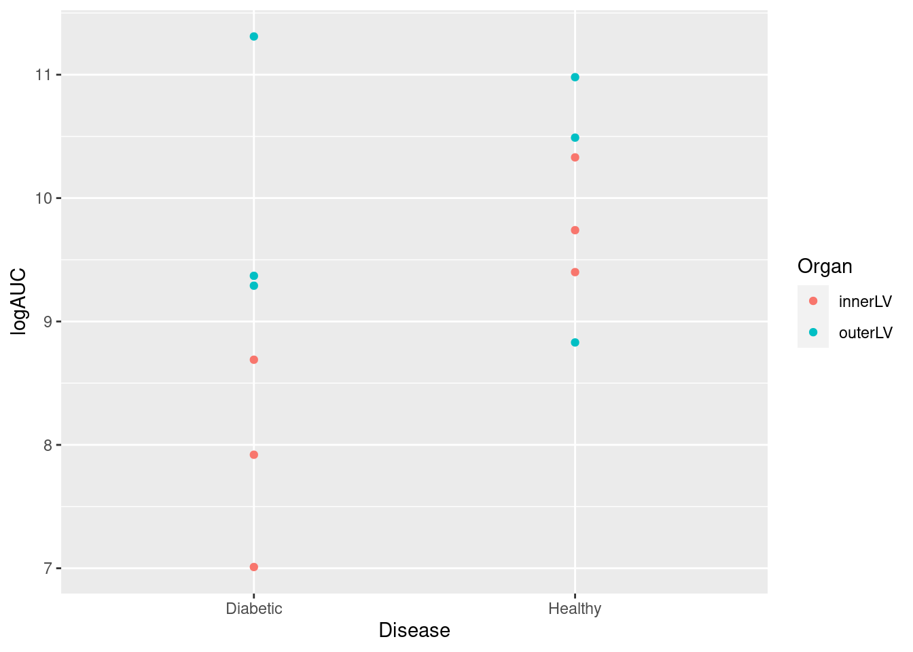

Modlling experimental data
A completely randomised design (CRD) as a linear model
As we’ve seen in the previous module that we can write a linear model with a single explanatory variable as
\[Y_i = \alpha + \beta_1x_i + \epsilon_i\]
When dealing with factor variables we use dummy variables and can write the above as
\[Y_{ik} = \alpha + \tau_k + \epsilon_{ik}\] where \(\tau_k\) is called an effect and represents the difference between the overall average, \(\alpha\), and the average at the \(k_{th}\) treatment level. The errors \(\epsilon_{ik}\) are again assumed to be normally distributed and independent due to the randomisation (i.e., \(\epsilon_{ik} \sim N(0, \sigma^2)\).
Or you might think of the model as
\[Y_{ik} = \mu_k + \epsilon_{ik}\]
where \(Y_{ik}\) is the response (i.e., observed coffee opacity) for the \(i^{th}\) experimental unit (i.e., coffee cup) subjected to the \(k^{th}\) level of the treatment factor (i.e., coffee type). Here \(\mu_k\) are the different (cell) means for each level of the treatment factor. See below for an illustration of this for three factor treatment levels (as in the coffee example above).

Analysis of a CRD in R
Let us again consider the data containing logAUC for 12 rats subjected to three different treatments (Surgery), C, P, and S we saw in module 2.
| Surgery | Rat | logAUC |
|---|---|---|
| C | 1 | 8.49 |
| C | 2 | 8.20 |
| C | 3 | 9.08 |
| C | 4 | 8.07 |
| P | 1 | 10.24 |
| P | 2 | 7.72 |
| P | 3 | 9.34 |
| P | 4 | 8.50 |
| S | 1 | 11.31 |
| S | 2 | 12.69 |
| S | 3 | 11.37 |
| S | 4 | 10.82 |
Using aov() (as we did in module 2)
## Df Sum Sq Mean Sq F value Pr(>F)
## Surgery 2 22.026 11.013 16.36 0.00101 **
## Residuals 9 6.059 0.673
## ---
## Signif. codes: 0 '***' 0.001 '**' 0.01 '*' 0.05 '.' 0.1 ' ' 1Hypothesis: We test the Null hypothesis, \(H_0\), population (Surgery) means are the same on average verses the alternative hypothesis, \(H_1\), that at least one differs from the others!
Probability of getting an F-statistic at least as extreme as the one we observe (think of the area under the tails of the curve below) p-value Pr(>F)= 0.001 tells us we have sufficient evidence to reject \(H_0\) at the 1% level of significance
Using lm()
## Estimate Std. Error t value Pr(>|t|)
## (Intercept) 8.4600 0.4102531 20.6214144 6.930903e-09
## SurgeryP 0.4900 0.5801856 0.8445574 4.202408e-01
## SurgeryS 3.0875 0.5801856 5.3215734 4.799872e-04So, which pairs of means are different? To carry out a pair-wise comparisons of means we can use two-sample t-tests, calculating our observed t-value where \(\text{t-value} = \frac{\text{Sample Difference}_{ij} - \text{Difference assuming } H_0 \text{ is true}_{ij}}{\text{SE of } \text{Sample Difference}_{ij}}\). Here, \(\text{Sample Difference}_{ij}\) = Difference between pair of sample means. We can then compute the p-value for observed t-value.
The output above has already done this for us:
(Intercept) = \(\text{mean}_C\) = 8.46
SE of (Intercept) = SE of \(\text{mean}_C\) = SEM = 0.4102531
\(\text{Surgery}_P\) = \(\text{mean}_P\) – \(\text{mean}_C\) = 0.49
SE of \(\text{Surgery}_P\) = SE of (\(\text{mean}_P\) - \(\text{mean}_C\) ) = SED = 0.5801856

Hypotheses being tested
- The t value and Pr (>|t|) are the t - and p-value for testing the null hypotheses:
- Mean abundance is zero for C population
- No difference between the population means of P and C
- No difference between the population means of S and C
We’re interested in 2 and 3, but not necessarily 1!
Two-sample t -tests for pairwise comparisons of means
- SurgeryP : t value = Estimate ÷ Std.Error = 0.8446; Pr (>|t|) = 0.4202
F-test:
## Analysis of Variance Table
##
## Response: logAUC
## Df Sum Sq Mean Sq F value Pr(>F)
## Surgery 2 22.0263 11.0132 16.359 0.001006 **
## Residuals 9 6.0591 0.6732
## ---
## Signif. codes: 0 '***' 0.001 '**' 0.01 '*' 0.05 '.' 0.1 ' ' 1The same as aov() in fact aov() is calling lm() in the background.
Diagnostic plots
Carrying out any linear regression recall that we have some key assumptions
- Independence
- There is a linear relationship between the response and the explanatory variables
- The residuals have constant variance
- The residuals are normally distributed

What do you think? Look back at module 2.
A Factorial experiment (as a CRD)

Equal replications (balanced design)
Data Global metabolic profiling and comparison of relative abundances of proteins (logAUC) in the inner and outer left ventricle (innerLV and outerLV) wall of diabetic and healthy male Wistar rats.
| Organ | Diabetic | Healthy |
|---|---|---|
| innerLV | n = 3 | n = 3 |
| outerLV | n = 3 | n = 3 |
| Disease | Organ | Animal | Sample | logAUC |
|---|---|---|---|---|
| Healthy | innerLV | 1 | 1 | 9.40 |
| Healthy | outerLV | 2 | 2 | 8.83 |
| Healthy | innerLV | 3 | 1 | 10.33 |
| Healthy | outerLV | 4 | 2 | 10.49 |
| Healthy | innerLV | 5 | 1 | 9.74 |
| Healthy | outerLV | 6 | 2 | 10.98 |
| Diabetic | innerLV | 7 | 1 | 7.92 |
| Diabetic | outerLV | 8 | 2 | 9.37 |
| Diabetic | innerLV | 9 | 1 | 8.69 |
| Diabetic | outerLV | 10 | 2 | 11.31 |
| Diabetic | innerLV | 11 | 1 | 7.01 |
| Diabetic | outerLV | 12 | 2 | 9.29 |
Fitting models with interactions using lm()
## change to factors (saves errors with predictmeans)
factorial$Disease <- as.factor(factorial$Disease)
factorial$Organ <- as.factor(factorial$Organ)
fac_lm <- lm(logAUC ~ Disease*Organ, data = factorial)
summary(fac_lm)$coefficients## Estimate Std. Error t value Pr(>|t|)
## (Intercept) 7.873333 0.5405835 14.564508 4.841215e-07
## DiseaseHealthy 1.950000 0.7645006 2.550685 3.413826e-02
## OrganouterLV 2.116667 0.7645006 2.768692 2.434579e-02
## DiseaseHealthy:OrganouterLV -1.840000 1.0811671 -1.701865 1.271934e-01So, the full model is
\[ \begin{aligned} \operatorname{\widehat{logAUC}} &= 7.87 + 1.95(\operatorname{Disease}_{\operatorname{Healthy}}) + 2.12(\operatorname{Organ}_{\operatorname{outerLV}}) - 1.84(\operatorname{Disease}_{\operatorname{Healthy}} \times \operatorname{Organ}_{\operatorname{outerLV}}) \end{aligned} \]
The three gobal null hypotheses being tested are
- \(H_0: \hat{\mu}_{\text{Diabetic}} = \hat{\mu}_{\text{Healthy}}\)
- \(H_0: \hat{\mu}_{\text{innerLV}} = \hat{\mu}_{\text{outerLV}}\)
- \(H_0: \hat{\mu}_{\text{Diabetic,innerLV}} = \hat{\mu}_{\text{Diabetic,outerLV}} = \hat{\mu}_{\text{Healthy,innerLV}} = \hat{\mu}_{\text{Healthy,outerLV}}\)
## Analysis of Variance Table
##
## Response: logAUC
## Df Sum Sq Mean Sq F value Pr(>F)
## Disease 1 3.1827 3.1827 3.6304 0.09320 .
## Organ 1 4.2960 4.2960 4.9003 0.05775 .
## Disease:Organ 1 2.5392 2.5392 2.8963 0.12719
## Residuals 8 7.0135 0.8767
## ---
## Signif. codes: 0 '***' 0.001 '**' 0.01 '*' 0.05 '.' 0.1 ' ' 1What conclusions do you draw?
Note with a balanced design ordering of term doesn’t matter. For example,
## Analysis of Variance Table
##
## Response: logAUC
## Df Sum Sq Mean Sq F value Pr(>F)
## Disease 1 3.1827 3.1827 3.6304 0.09320 .
## Organ 1 4.2960 4.2960 4.9003 0.05775 .
## Disease:Organ 1 2.5392 2.5392 2.8963 0.12719
## Residuals 8 7.0135 0.8767
## ---
## Signif. codes: 0 '***' 0.001 '**' 0.01 '*' 0.05 '.' 0.1 ' ' 1## Analysis of Variance Table
##
## Response: logAUC
## Df Sum Sq Mean Sq F value Pr(>F)
## Organ 1 4.2960 4.2960 4.9003 0.05775 .
## Disease 1 3.1827 3.1827 3.6304 0.09320 .
## Organ:Disease 1 2.5392 2.5392 2.8963 0.12719
## Residuals 8 7.0135 0.8767
## ---
## Signif. codes: 0 '***' 0.001 '**' 0.01 '*' 0.05 '.' 0.1 ' ' 1Unqual replications (unbalanced design)
Here, we consider a subset of the data above.
| Organ | Diabetic | Healthy |
|---|---|---|
| innerLV | n = 3 | n = 1 |
| outerLV | n = 2 | n = 2 |
| Disease | Organ | Animal | Sample | logAUC |
|---|---|---|---|---|
| Healthy | outerLV | 4 | 2 | 10.49 |
| Healthy | innerLV | 5 | 1 | 9.74 |
| Healthy | outerLV | 6 | 2 | 10.98 |
| Diabetic | innerLV | 7 | 1 | 7.92 |
| Diabetic | outerLV | 8 | 2 | 9.37 |
| Diabetic | innerLV | 9 | 1 | 8.69 |
| Diabetic | innerLV | 11 | 1 | 7.01 |
| Diabetic | outerLV | 12 | 2 | 9.29 |
Fitting models with interactiona using lm()
Note: order matters. For example,
## Analysis of Variance Table
##
## Response: logAUC
## Df Sum Sq Mean Sq F value Pr(>F)
## Disease 1 7.1102 7.1102 18.4955 0.01264 *
## Organ 1 3.1149 3.1149 8.1027 0.04656 *
## Disease:Organ 1 0.0913 0.0913 0.2376 0.65145
## Residuals 4 1.5377 0.3844
## ---
## Signif. codes: 0 '***' 0.001 '**' 0.01 '*' 0.05 '.' 0.1 ' ' 1## Analysis of Variance Table
##
## Response: logAUC
## Df Sum Sq Mean Sq F value Pr(>F)
## Organ 1 5.7291 5.7291 14.9029 0.01814 *
## Disease 1 4.4960 4.4960 11.6953 0.02678 *
## Organ:Disease 1 0.0913 0.0913 0.2376 0.65145
## Residuals 4 1.5377 0.3844
## ---
## Signif. codes: 0 '***' 0.001 '**' 0.01 '*' 0.05 '.' 0.1 ' ' 1The three gobal null hypotheses being tested are the same
- \(H_0: \hat{\mu}_{\text{Diabetic}} = \hat{\mu}_{\text{Healthy}}\)
- \(H_0: \hat{\mu}_{\text{innerLV}} = \hat{\mu}_{\text{outerLV}}\)
- \(H_0: \hat{\mu}_{\text{Diabetic,innerLV}} = \hat{\mu}_{\text{Diabetic,outerLV}} = \hat{\mu}_{\text{Healthy,innerLV}} = \hat{\mu}_{\text{Healthy,outerLV}}\)
However, now the order the terms affects the estimation. Why?